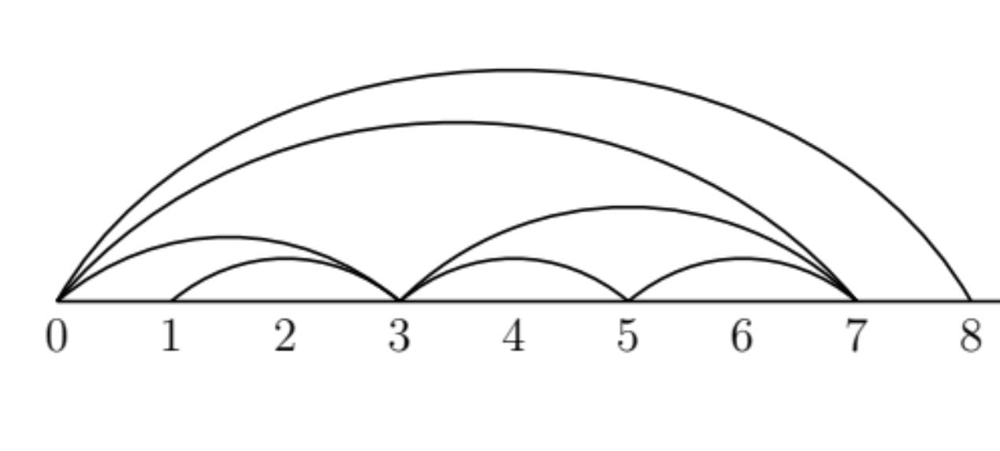
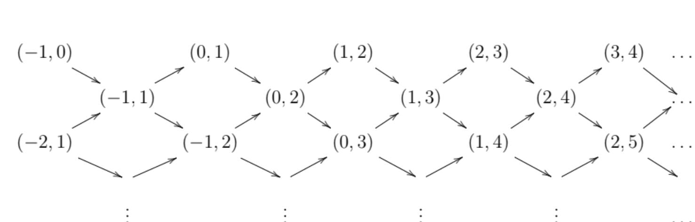

Özgür Esentepe - Universität Graz
Frises en algèbre, combinatoire et géométrie
CIRM - Mai 2025
I forgot to say this in the abstract.
Penrose tilings (up to isometry) are parametrised by
sequences on the two element set $\{0,1\}$ (up to tail equivalence) with the property that there are no consecutive 1s.
The set of all sequences on $\{0,1\}$ with Tychonoff topology is homemorphic to the Cantor set.
The map that replaces $1$ with $10$ is a homeomorphism.
Tail equivalence is dense on this subspace. i.e. every equivalence class is dense.
``Penrose tilings up to isometry" is a trivial topological space.
This bad topology gave rise to noncommutative geometry.
Connes' school of noncommutative geometry studied Penrose tilings via $\mathbb{C}^*$-algebras and $K$-theory.
Paul Smith saw Penrose tilings as points in a noncommutative space whose quasicoherent sheaves were given by graded modules over a noncommutative algebra.
Smith's ring was \begin{align*} P=\frac{\mathbb{C}\langle x,y \rangle}{(x^2)} \end{align*} where $x,y$ both lived in degree $1$ and he considered $\mathbb{N}$-graded modules over $P$ modulo tail equivalence.
A decade after Smith's work came the work of August-Cheung-Faber-Gratz-Schroll.
Categories for Grassmannian cluster algebras of infinite rank. And also Cluster structures for the $A_\infty$- singularity.
They had the ring \begin{align*} R = \frac{\mathbb{C}[x,y]}{(x^2)} \end{align*} where $x$ lived in degree $1$ and $y$ in $-1$.
Could we get Penrose tilings involved?
Yes, we could.
Consider the category of $\mathbb{Z}$-graded maximal Cohen-Macaulay modules over $R$. Cluster tilting subcategories of this Frobenius category are in bijection with fountains of the infinitigon.
During this talk, a right fountain is a triangulation of natural numbers which contains infinitely many arcs starting at 0.
We will define two classes of arcs for a right fountain $R$.
The class $A_1(R)$ will contain the fountain arcs.
The class $A_2(R)$ will contain the arcs that connect the fountain arcs.
We will define two sequences.
\begin{align*} \boldsymbol{x}^R_n = \begin{cases} 1 \quad \text{if } (0,n+1) \in R \\ 0 \quad \text{else} \end{cases} \end{align*}
In the example, \begin{align*} 0,1,0,0,0,1,1,\ldots\end{align*}
And we define the sequence $\boldsymbol{y}^R$ by the rule that $\boldsymbol{y}^R_n$ is the $(n+1)$st integer $\ell$ such that $(0,\ell) \in R$.
In the example, \begin{align*} 3,7,8,\ldots\end{align*}
Every nonboundary arc in a right fountain is a diagonal of a unique quadrileteral.
Mutation at a nonboundary arc in a right fountain replaces this arc with the other diagonal.
Transfinite mutations in the completed infinitigon were studied by Baur-Gratz.
We want more mutation classes.
Lemma 1. Let $m$ be a positive integer and $\mu$ be the mutation at the fountain arc $(0, \boldsymbol{y}^R_m)$. Then, the sequences $\boldsymbol{x}^R$ and $\boldsymbol{x}^{\mu(R)}$ differ exactly at one place.
Lemma 2. Let $m$ be a positive integer and $\mu$ be the mutation at the arc $(\boldsymbol{y}^R_m, \boldsymbol{y}^R_{m+1})$. Then, the sequences $\boldsymbol{x}^R$ and $\boldsymbol{x}^{\mu(R)}$ differ exactly at one place.
Two right fountains are called equivalent if one can be mutated into the other one by using only finitely many mutations at arcs in $A_1$ or $A_2$.
Two right fountains $R_1$ and $R_2$ are equivalent if and only if $\boldsymbol{x}^{R_1}$ and $\boldsymbol{x}^{R_2}$ differ at finitely many places.
For an integer $n \geq 1$ \[ \boldsymbol{x}_n^R = \boldsymbol{x}_{n+1}^R = 1 \iff \boldsymbol{y}_{n+1}^R - \boldsymbol{y}_n^R = 1 \] which is equivalent to saying that $(\boldsymbol{y}^R_n, \boldsymbol{y}^R_{n+1})$ is a boundary arc.
We say that a right fountain is special if it is equivalent to a right fountain where $A_2$ does not contain any boundary arcs.
Theorem. Special right fountains up to equivalence is in one-to-one correspondence with Penrose tilings up to isometry.
An infinite (right) half-frieze is a set of positive integers $m_{(a,b)}$ with $0 \leq a \leq b$ which satisfies the following rules:
The quiddity sequence is the sequence $m_{(a, a+2)}$.
The quiddity sequence determines the freeze.
And this gives us an infinite right half-frieze.
Note. Mutating at a single arc changes the triangulation and the sequence locally. It changes the whole frieze.
Going back to the $A_\infty$-singularity.
Let $\C$ denote the category of $\mathbb{Z}$-graded MCM modules over $R=\mathbb{C}[x,y]/(x^2)$.
$R$ has countable Cohen-Macaulay type.
The module $(x,y^k)(j)$ corresponds to the arc $(-j-k, 1-j)$.
The modules $R(j)$ correspond to boundary arcs.
The modules $\dfrac{R}{x}(j)$ correspond to infinite arcs $(j, \infty)$.
The AR-quiver is 
Infinite arcs do not appear because they are not generically free.
A cluster character on $\C$ with values in a commutative ring $R$ is a map $X$ from $\mathrm{obj}(\C)$ to $R$ which takes the same values on isomorphic objects and which satisfies $X(M \oplus N) = X(M) X(N)$ and also for any $M,N$ with \[\dim_\mathbb{C}\Ext_R^1(M,N) = 1 = \dim_\mathbb{C}\Ext_R^1(N,M)\]
we want an equality \[ X(M)X(N) = X(A) + X(B)\] where \[0 \to M \to A \to N\to 0 \\ 0 \to N \to B \to M \to 0 \]